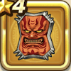

おやぶんの盾
攻略班 5.5点 / ビッグシールドうけながしのかまえ眠り耐性+5%
くわしい特徴
【レベル別習得スキル】 Lv1ビッグシールド（消費MP：7）使用時含む5ターンの間、物理攻撃へのガード率を1段階上げる。最大2段階まで上がり、1段階で25％、2段階で50％ガード率が上昇する。 Lv6うけながしのかまえ（消費MP：18）1ターンの間に1度だけ物理攻撃をランダムな敵に跳ね返す Lv8眠り耐性+5% Lv14守備力+3 Lv20ガード率+1% 【限界突破スキル】 1凸眠り耐性+5% 2凸ガード率+1% 3凸守備力+3 4凸ガード率+1%